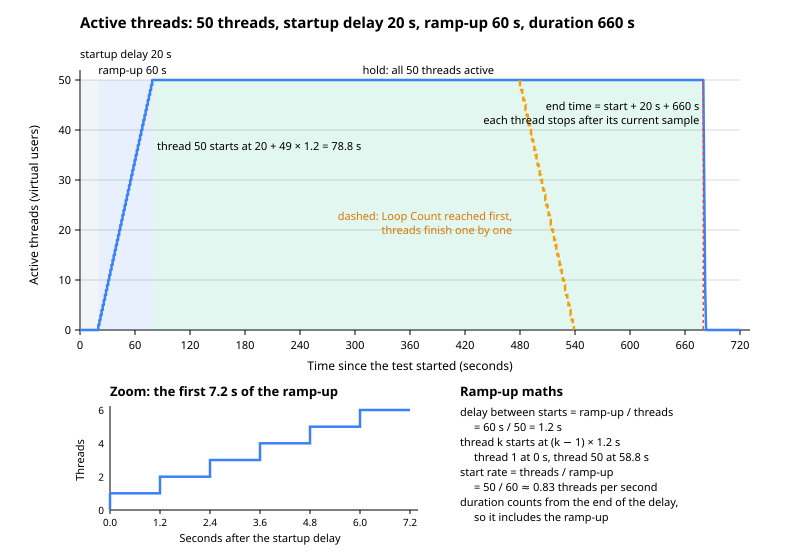

Thread Groups: Concurrent Users & Ramp-up
|
This content was generated with the assistance of AI and should be verified against the official documentation before being relied on in production. |
This page was written against Apache JMeter 5.6.3, the latest release on 2026-10-14. It runs on Java 8 or later, and Java 17 or later is recommended. JMeter 6.0 is not released: the changes planned for it on the master branch need Java 17 or later (Java 21 recommended) and are described as planned, not as shipped behaviour. The books that cover thread groups (Bayo Erinle, Performance Testing with JMeter, 2nd ed., chapter 2, on JMeter 2.12; Sai Matam and Jagdeep Jain, Pro Apache JMeter, chapter 5, on JMeter 3.0) describe the same three core fields (threads, ramp-up, loops). Since then the Thread Group has gained Same user on each iteration, lost the absolute start and end times of its scheduler, and its companion elements (validation, running a selection of groups) have appeared. Every field name, property and rule on this page is taken from the component reference, the user manual and, where the manual is silent, the 5.6.3 source code, which is cited as such.
The Thread Group is where load is created. Each of its threads is one virtual user that runs the elements below it from top to bottom, again and again, independently of every other thread. The Thread Group decides how many of those users exist, how quickly they arrive, how long they stay and what they do when a request fails. It implements the closed workload model described in Performance Testing Fundamentals: a fixed population of users, each of which sends its next request only after the previous one has returned. Plans that must hold an arrival rate whatever the response time belong on Open Model & Throughput Control; think time between requests is covered on Timers & Think Time.
The running example is the Bookshelf API (POST /api/auth/login, GET /api/books?query=, GET /api/books/{id},
POST /api/loans, GET /api/loans/{id}) and its test plan bookshelf-load.jmx, with three profiles on this page:
smoke (1 user), load (50 users, a 60 s ramp-up, held for 10 minutes) and soak (a steady population for hours).
Where the Thread Group sits
A Thread Group is a direct child of the Test Plan. Every sampler and logic controller must be inside one: the manual describes thread groups as the starting point of every test plan. Elements placed directly under the Test Plan, such as a listener or an HTTP Request Defaults, apply to every Thread Group; elements inside a Thread Group apply only to its threads (the scoping rules are on Test Plan Elements, Execution Order & Scoping).
Test Plan bookshelf-load.jmx
├── HTTP Request Defaults (localhost:8080, applies to all groups)
├── setUp Thread Group "Seed data" runs first
├── Thread Group "Borrowers" the measured load
│ ├── HTTP Cookie Manager
│ ├── CSV Data Set Config (users.csv)
│ ├── Transaction Controller "Journey"
│ │ ├── POST /api/auth/login
│ │ ├── GET /api/books?query=...
│ │ ├── GET /api/books/{id}
│ │ ├── POST /api/loans
│ │ └── GET /api/loans/{id}
│ └── Uniform Random Timer (think time)
├── tearDown Thread Group "Clean up" runs last
└── Summary ReportInside the Thread Group, its children are driven by an implicit Loop Controller: that is the element the Loop Count
field configures, and one pass through all the children is one iteration. In the .jmx file this controller is stored
as the ThreadGroup.main_controller property of the Thread Group.
The life of one thread follows a fixed sequence. JMeter applies the startup delay (if the thread lifetime is specified), then the thread’s own ramp-up offset, then runs iterations until the loop count is used up, the end time is reached, a sampler error action ends the thread, or the test is stopped:
Adding a Thread Group
-
Start JMeter in GUI mode (
bin/jmeter) and open or createbookshelf-load.jmx. -
Right-click Test Plan and choose Add → Threads (Users) → Thread Group.
-
Rename it Borrowers in the Name field.
-
Fill the fields described in the next section, add the samplers below it, and save with File → Save.
A Thread Group saved by the GUI looks like this in the .jmx file. This is the load profile with literal values; the
plan is parameterised with properties later on this page.
<ThreadGroup guiclass="ThreadGroupGui" testclass="ThreadGroup" testname="Borrowers" enabled="true">
<stringProp name="ThreadGroup.on_sample_error">continue</stringProp>
<elementProp name="ThreadGroup.main_controller" elementType="LoopController"
guiclass="LoopControlPanel" testclass="LoopController" testname="Loop Controller" enabled="true">
<boolProp name="LoopController.continue_forever">false</boolProp>
<intProp name="LoopController.loops">-1</intProp>
</elementProp>
<stringProp name="ThreadGroup.num_threads">50</stringProp>
<stringProp name="ThreadGroup.ramp_time">60</stringProp>
<boolProp name="ThreadGroup.same_user_on_next_iteration">true</boolProp>
<boolProp name="ThreadGroup.delayedStart">false</boolProp>
<boolProp name="ThreadGroup.scheduler">true</boolProp>
<stringProp name="ThreadGroup.duration">660</stringProp>
<stringProp name="ThreadGroup.delay">0</stringProp>
</ThreadGroup>LoopController.loops set to -1 is how the GUI stores the Infinite check box; the official templates shipped in
bin/templates use the same form.
Every field of the Thread Group
The table lists every field of the Thread Group panel in JMeter 5.6.3, the property that stores it in the .jmx file
and its behaviour. GUI labels are those of the English resource bundle; descriptions follow the component reference.
| GUI field | .jmx property |
Default in a new group | Meaning |
|---|---|---|---|
Name |
|
Thread Group |
Descriptive name shown in the tree. It is also the prefix of every thread name ( |
Comments |
|
empty |
Free text, not used at run time. |
Action to be taken after a Sampler error |
|
Continue |
What happens when a sample fails, either because the sampler itself failed or because an assertion failed. See Action to be taken after a Sampler error. |
Number of Threads (users) |
|
1 |
Number of users to simulate. Required. |
Ramp-up period (seconds) |
|
1 |
How long JMeter takes to get all the threads started. The first thread always starts immediately. Required. See Number of Threads and the ramp-up maths. |
Loop Count, with the Infinite check box |
|
1 |
Number of times each thread performs the test case. Infinite makes the thread run until the test is stopped or the end of the thread lifetime is reached. Required unless Infinite is selected. |
Same user on each iteration |
|
selected |
If selected, cookie and cache data from the first sampler response are used in later iterations (a Cookie Manager and a Cache Manager are needed). If not selected, they are not reused and a new connection is opened between iterations. See Same user on each iteration. Added in JMeter 5.2. |
Delay Thread creation until needed |
|
not selected |
If selected, each thread is created only when its share of the ramp-up time has elapsed. If not, all threads are created when the test starts and then pause for their share of the ramp-up. See Delay Thread creation until needed. |
Specify Thread lifetime |
|
not selected |
Enables the two fields below, which confine the threads' operation time. |
Duration (seconds) |
|
empty |
A relative end time, used to calculate when the threads stop. Only used when Specify Thread lifetime is selected. |
Startup delay (seconds) |
|
empty |
A relative startup delay, used to calculate when the threads start. Only used when Specify Thread lifetime is selected. |
Older .jmx files also contain ThreadGroup.start_time and ThreadGroup.end_time (longProp values with epoch
milliseconds). They are leftovers of the absolute Start Time and End Time fields that JMeter 4.0 removed from the
scheduler (Bug 61549); 5.6.3 still loads such files and the official templates still carry the properties, but the
values are not used. The numeric fields are stored as strings (stringProp), which is what lets them contain a function
call such as ${__P(threads,1)}.
Action to be taken after a Sampler error
A sampler error is a sample marked as failed: a connection error, a timeout, an HTTP status that the sampler treats as failure, or any failed assertion on that sample. The five choices are:
| Choice | .jmx value |
Effect |
|---|---|---|
Continue |
|
Ignore the error and carry on with the next element. The default, and the right choice for most load tests, where errors are counted, not acted on. |
Start Next Thread Loop |
|
Ignore the error, abandon the rest of the current iteration and start the next one. Useful when later steps depend on an earlier one: if the Bookshelf login fails there is no token, and sending the four remaining requests would only add four more meaningless errors. |
Stop Thread |
|
The current thread exits; the other threads continue. The population shrinks with every error, so the load falls. |
Stop Test |
|
The entire test is stopped at the end of any current samples (a graceful Shutdown). |
Stop Test Now |
|
The entire test is stopped abruptly. Any current samplers are interrupted if possible. |
The setting applies to every sampler in the group. When only one request should trigger an action (only the login, for example), leave the group on Continue and put a Result Status Action Handler post-processor under that sampler. It offers the same five choices; its 5.6.3 panel also shows Break Current Loop and Go to the next iteration of Current Loop, which act on the nearest enclosing loop instead of the whole thread loop but are not yet described in the component reference.
When the test runs in CLI mode, the log states the chosen action as each group starts, for example
Thread will start next loop on error or Test will stop on error, which is a quick way to check what a plan received
from a property.
Stop Test and Stop Test Now make the error rate the end condition of the whole run. They suit a smoke test in a CI job (fail fast if the environment is broken), and are dangerous in a load test, where one timeout among thousands of requests would end the measurement. Stop Thread silently converts a fixed population into a shrinking one, which makes throughput figures from the end of the run meaningless; prefer Start Next Thread Loop.
Number of Threads and the ramp-up maths
Number of Threads is the number of virtual users. Each thread is a Java thread with its own copy of the elements below the Thread Group, its own variables and its own cookies, and runs the elements in its entirety and independently of other threads. "Concurrent users" in JMeter therefore means threads that exist at the same time, not requests in flight: a thread that is sleeping in a timer is still a user.
The Ramp-up period spreads the start of those threads over time. With \(N\) threads and a ramp-up of \(R\) seconds:
where \(t_k\) is the start time of thread \(k\) after the group’s startup delay. The manual’s own example is 10 threads and a ramp-up of 100 s: each thread starts 10 s after the previous one. Because the first thread starts directly, the tenth starts after 90 s, not 100 s, and a group of one thread has an effective ramp-up of zero.
| Threads | Ramp-up | Delay between starts | Last thread starts at | Start rate |
|---|---|---|---|---|
10 |
100 s |
10 s |
90 s |
0.1 threads per second |
30 |
120 s |
4 s |
116 s |
0.25 threads per second |
50 |
60 s |
1.2 s |
58.8 s |
0.83 threads per second |
200 |
100 s |
0.5 s |
99.5 s |
2 threads per second |
50 |
0 s |
0 s |
0 s |
all at once (a spike) |
In the 5.6.3 implementation the delay between starts is computed in milliseconds and rounded
(round(rampUp × 1000 / threads)), and each new thread corrects for the time it took to start the previous one, so the
schedule does not drift on a busy load generator. While a thread waits for its ramp-up offset it checks for a test stop
every jmeterthread.rampup.granularity milliseconds (default 1000), which is why stopping a test during a long ramp-up
can take up to a second.
The manual gives two constraints and a starting point. The ramp-up must be long enough not to overload the system at the start of the test, yet short enough for the last threads to start before the first ones have finished. As a first guess, start with a ramp-up equal to the number of threads and adjust. A ramp-up that is too short produces a spike of connection set-ups, logins and cold caches that the system under test would never see in production, and the first minutes of results then describe that spike, not the steady state. A ramp-up that is too long, combined with a finite loop count, means early threads finish before late threads start, so the target concurrency is never reached.
The figure shows the active threads of a group with 50 threads, a 20 s startup delay, a 60 s ramp-up and a 660 s duration, and the alternative ending when the loop count runs out first.

Loop Count and Infinite
The Loop Count is the number of iterations each thread performs, not a total for the group: 50 threads with a loop count of 10 run 500 iterations of the journey. With a finite count and no thread lifetime, each thread ends when its own iterations are done. Threads that started later end later, so the end of the test mirrors the ramp-up (the dashed line in the figure), and the steady state lasts only as long as the time between the last thread starting and the first thread finishing.
Infinite (-1 in the file) runs iterations until something else ends the thread: the end of the thread lifetime, a
sampler error action, or a Stop or Shutdown of the test. An infinite loop with no thread lifetime runs until it is
stopped by hand; in CLI mode that means the shutdown port (4445 by default) or bin/shutdown.sh.
For load tests, a duration is the better end condition: it fixes the measurement window regardless of how fast the server answers, whereas a loop count makes the test shorter when the server is fast and longer when it is slow. A loop count is the better choice for smoke tests and for data-driven runs where each iteration consumes one CSV row and the file holds exactly as many rows as needed.
Specify Thread lifetime: Duration and Startup delay
Selecting Specify Thread lifetime (stored as ThreadGroup.scheduler, the name of the old Scheduler check box)
enables Duration (seconds) and Startup delay (seconds). When the test starts, JMeter waits for the startup delay
before starting the group’s threads and runs it for the configured duration. When the scheduler is used, the group runs
until either the loop count or the duration is reached, whichever occurs first.
Three details matter when choosing the numbers:
-
The duration includes the ramp-up. In 5.6.3 the end time of every thread is calculated as the moment the group starts plus the startup delay plus the duration; the ramp-up offset of each thread is not added to it. A group with a 60 s ramp-up and a 600 s duration holds full load for 540 s at most. To hold for a full 10 minutes, set the duration to ramp-up plus hold: 60 + 600 = 660 s. This behaviour comes from the 5.6.3 source code (
ThreadGroup.scheduleThread); the manual only says that the duration is used to work out the end time. -
The end condition is only checked between samples. When the end time is reached a thread stops, but JMeter does not interrupt samplers that are waiting for a response, so the end may be delayed arbitrarily. Set connect and response timeouts on the HTTP Request (or HTTP Request Defaults) so that a hung server cannot keep a test running long after its window.
-
Timers do not overrun the end. Since JMeter 3.1 (Bug 60049) a timer delay that would end after the scheduled end is shortened, and a thread whose next pause would go past the end time stops at once, so a long think time does not delay the end of the test.
The Startup delay is how to stagger groups that run in parallel: a Browsers group with no delay and an Admins group with a 300 s delay start five minutes apart, even though both are started by the same test. Empty fields count as zero for the delay. An empty or zero duration is not a way to say "no limit": in 5.6.3 the test then stops with an "Invalid duration" error (or, with delayed thread creation, no thread starts at all).
Same user on each iteration
This option decides whether a thread’s next iteration is the same user continuing a visit or a new user arriving.
-
Selected (default): cookie and cache data obtained in one iteration are used in the next, and connections stay open. This needs an HTTP Cookie Manager and an HTTP Cache Manager in the group to have any effect on cookies and cache.
-
Not selected: cookie and cache data are not carried into the next iteration, and a new connection is opened between iterations. The component reference warns that this raises response times (connection and TLS set-up are measured again) and consumes more memory and CPU on the load generator.
The connection behaviour is governed by the property httpclient.reset_state_on_thread_group_iteration (default
true): resetting the HTTP state means closing open connections and resetting the SSL state. The Cookie Manager’s own
Clear Cookies each Iteration and the Cache Manager’s Clear cache each iteration still exist; in 5.6.3 each of them
offers a Use Thread Group configuration to control … check box, so the Thread Group can be the single place where the
decision is made.
For Bookshelf, where each iteration logs in, borrows a book and leaves, not selected is the more faithful model: every iteration is a new reader with a new connection and a new session cookie. Where the JWT is obtained once in a Once Only Controller and reused for many iterations, keep it selected, because the iterations are one long session. When comparing two runs, keep this option the same, since it changes response times on its own.
Delay Thread creation until needed
By default JMeter creates every thread object when the test starts and makes each one sleep until its ramp-up offset. With Delay Thread creation until needed selected, threads are created only when their share of the ramp-up time has elapsed. The manual recommends it for tests whose ramp-up is significantly longer than the time a thread needs to run its iterations, so that earlier threads finish before later ones start, and best-practices notes that it allows a very large total number of threads as long as only a limited number of them are active at the same time. The option was added in JMeter 2.8.
The option changes memory use, not the load shape: the same threads start at the same times. It matters for plans with thousands of short-lived threads (each runs a few iterations and exits) and makes no difference to a load test whose threads all live until the end, because those threads all exist at full load anyway.
Choosing users, ramp-up and duration
The number of threads follows from the workload, through Little’s Law as explained in Performance Testing Fundamentals:
where \(N\) is the number of threads, \(X\) the target throughput of iterations (or requests) per second, \(R_t\) the response time and \(Z\) the think time per iteration. The ramp-up follows from how fast real users arrive and how much warm-up the system needs, and the duration from how long the steady state must be observed. The books give the same advice (PTwJ ch. 2 sizes the group from expected concurrent users; Pro ch. 5 stresses a gradual ramp-up and a steady period long enough to measure); the formulas above make it quantitative.
The Bookshelf journey has five requests. Measured at light load, each takes 0.2 s on average and is followed by 3 s of think time, so one iteration takes 5 × (0.2 + 3) = 16 s.
| Profile | Threads | Ramp-up | Loop Count | Thread lifetime | Startup delay |
|---|---|---|---|---|---|
Smoke |
1 |
1 s |
1 |
not specified |
none |
Load |
50 |
60 s |
Infinite |
Duration 660 s |
0 s |
Soak |
30 |
300 s |
Infinite |
Duration 14700 s |
0 s |
Smoke. One thread, one iteration: five requests in about 16 s. It checks that the script, data and environment work before any load is applied. The ramp-up is irrelevant (one thread starts immediately).
Load. 50 threads with a 60 s ramp-up start one thread every 1.2 s (0.83 per second). At full load each thread sends 5 / 16 = 0.3125 requests per second, so the group sends 50 × 0.3125 ≈ 15.6 requests per second, or 3.1 journeys per second. The 660 s duration gives the 60 s ramp-up plus a 600 s hold, during which the group sends about 15.6 × 600 ≈ 9,400 requests. Analyse only the hold: exclude the first 60 s, when fewer than 50 users were active.
Soak. The goal is to keep a moderate, steady population for hours to expose memory leaks, connection pool exhaustion and growing tables. 30 threads, a gentle 300 s ramp-up (one thread every 10 s) and a 4 h hold give a duration of 300 + 14,400 = 14,700 s. The group sends 30 × 0.3125 ≈ 9.4 requests per second, about 135,000 requests over the hold, and each of the 30 threads creates a loan in every iteration, so the setUp group must seed enough books and the tearDown group must remove about 27,000 loans. A soak at a constant arrival rate rather than a constant population is built with the Open Model Thread Group on Open Model & Throughput Control.
Two consequences of the closed model are worth stating for every profile. If the server slows down, each thread sends fewer requests per second, so the load falls exactly when the system struggles; check the measured throughput against the target after every run. And a Thread Group never sends more than one request at a time per thread, so 50 threads can never produce more than 50 concurrent requests, however short the think time.
Parameterising users, ramp-up and duration for CLI runs
Load profiles should differ only in their numbers, not in their .jmx file. Type __P function calls in the Thread
Group fields instead of literal values; each reads a JMeter property and falls back to its default. The properties and
their precedence are covered on
Properties, Variables & Functions.
| Field | Value typed in the GUI |
|---|---|
Action to be taken after a Sampler error |
Start Next Thread Loop |
Number of Threads (users) |
|
Ramp-up period (seconds) |
|
Loop Count |
|
Specify Thread lifetime |
selected |
Duration (seconds) |
|
Startup delay (seconds) |
|
The resulting fragment, with a Loop Count that is itself a property (-1 gives an infinite loop):
<ThreadGroup guiclass="ThreadGroupGui" testclass="ThreadGroup" testname="Borrowers" enabled="true">
<stringProp name="ThreadGroup.on_sample_error">startnextloop</stringProp>
<elementProp name="ThreadGroup.main_controller" elementType="LoopController"
guiclass="LoopControlPanel" testclass="LoopController" testname="Loop Controller" enabled="true">
<boolProp name="LoopController.continue_forever">false</boolProp>
<stringProp name="LoopController.loops">${__P(loops,1)}</stringProp>
</elementProp>
<stringProp name="ThreadGroup.num_threads">${__P(threads,1)}</stringProp>
<stringProp name="ThreadGroup.ramp_time">${__P(rampup,1)}</stringProp>
<boolProp name="ThreadGroup.same_user_on_next_iteration">false</boolProp>
<boolProp name="ThreadGroup.delayedStart">false</boolProp>
<boolProp name="ThreadGroup.scheduler">true</boolProp>
<stringProp name="ThreadGroup.duration">${__P(duration,60)}</stringProp>
<stringProp name="ThreadGroup.delay">${__P(delay,0)}</stringProp>
</ThreadGroup>With the scheduler selected, the smoke profile ends after its single loop or after 60 s, whichever comes first. Each profile is then one command line. The smoke run uses the defaults:
jmeter -n -t bookshelf-load.jmx -l smoke.jtlThe load run overrides four properties:
jmeter -n -t bookshelf-load.jmx -l load.jtl -e -o report-load \
-Jthreads=50 -Jrampup=60 -Jloops=-1 -Jduration=660and the soak run reads its values from a file, soak.properties:
threads=30
rampup=300
loops=-1
duration=14700jmeter -n -t bookshelf-load.jmx -q soak.properties -l soak.jtlIn CLI mode the summariser prints a line every 30 s by default. The + lines cover the last interval and end with the
thread counts, which make the ramp-up visible; the = lines are running totals. Representative output of the load run
(numbers depend on the machine and the target):
Creating summariser <summary>
Created the tree successfully using bookshelf-load.jmx
Starting standalone test @ 2026 Oct 14 10:00:00 CEST (1791964800000)
Waiting for possible Shutdown/StopTestNow/HeapDump/ThreadDump message on port 4445
summary + 47 in 00:00:28 = 1.7/s Avg: 198 Min: 41 Max: 612 Err: 0 (0.00%) Active: 24 Started: 24 Finished: 0
summary + 326 in 00:00:30 = 10.9/s Avg: 205 Min: 38 Max: 701 Err: 0 (0.00%) Active: 49 Started: 49 Finished: 0
summary = 373 in 00:00:58 = 6.4/s Avg: 204 Min: 38 Max: 701 Err: 0 (0.00%)
summary + 468 in 00:00:30 = 15.6/s Avg: 201 Min: 40 Max: 689 Err: 0 (0.00%) Active: 50 Started: 50 Finished: 0
summary = 841 in 00:01:28 = 9.6/s Avg: 202 Min: 38 Max: 701 Err: 0 (0.00%)
...
summary + 470 in 00:00:30 = 15.7/s Avg: 199 Min: 39 Max: 654 Err: 0 (0.00%) Active: 0 Started: 50 Finished: 50
summary = 9764 in 00:11:00 = 14.8/s Avg: 201 Min: 37 Max: 912 Err: 0 (0.00%)
Tidying up ... @ 2026 Oct 14 10:11:01 CEST (1791965461000)
... end of runThe Active count climbs by about 25 every 30 s (0.83 threads per second) and stays at 50 during the hold; the rate
settles at the 15.6 requests per second predicted above (the final running total averages less, about 14.8 per
second, because it includes the ramp-up). A rate that keeps falling while Active stays at 50 means
response times are growing: the closed model is throttling itself.
In a distributed run, define these properties with -G instead of -J, so that every load generator receives them.
Each generator runs the whole plan, so -Gthreads=50 on four generators means 200 users in total.
Several Thread Groups in one plan
A plan can hold several Thread Groups. By default they all start at the same time and run in parallel, which is how a workload with different kinds of users is modelled: for Bookshelf, a Browsers group of 40 threads that only searches and views books, and a Borrowers group of 10 threads that logs in and creates loans. Each group has its own threads, ramp-up and duration; giving each its own startup delay staggers them.
Selecting Run Thread Groups consecutively (i.e. one at a time) on the Test Plan (TestPlan.serialize_threadgroups)
runs the groups in tree order, each finishing before the next starts. That turns groups into phases (warm-up, then
measured load), at the cost of a total run time that is the sum of all groups. The option and its trade-offs are
covered on Test Plan Elements, Execution Order & Scoping.
| Parallel (default) | Consecutive | |
|---|---|---|
Start of each group |
All at test start (plus each group’s startup delay) |
When the previous group has finished |
Total load |
Sum of all groups' threads at the same time |
One group’s threads at a time |
Total run time |
The longest group |
The sum of all groups |
Typical use |
A realistic mix of user types |
Phases: warm-up, then load; or one measurement per group |
Source: Test Plan (Component Reference)
Any group can also be run on its own from the GUI: select one or more Thread Groups, right-click, and choose Start,
Start no pauses (timers ignored) or Validate. Validation runs the selection with one thread, one iteration, no timers
and no startup delay, and can be tuned in user.properties with testplan_validation.nb_threads_per_thread_group,
testplan_validation.ignore_timers, testplan_validation.number_iterations and
testplan_validation.tpc_force_100_pct. Running a selection and Validate were both added in JMeter 3.0.
setUp and tearDown Thread Groups
A setUp Thread Group (Add → Threads (Users) → setUp Thread Group) is a Thread Group with exactly the same fields that runs before the regular Thread Groups; a tearDown Thread Group runs after them. Use them for preparation and clean-up that must not be measured as part of the load:
-
setUp: create the test books through
POST /api/books, create test users, warm a cache, or read a value (an admin token, an ID range) and publish it as a property with__setPropertyso the main groups can read it with__P. Properties, not variables, are the way to pass data between groups, because variables belong to one thread. -
tearDown: delete the loans and books created by the test, or reset the database through an admin endpoint.
The engine starts all setUp groups, waits until every setUp thread has ended, then starts the regular groups, waits for all of them to end, and then starts the tearDown groups. With Run Thread Groups consecutively selected, the groups inside each of the three phases also run one at a time.
When the tearDown groups run is the subtle part. By default a tearDown group does not run if the test is gracefully
shut down (Shutdown in the GUI, the shutdown port or bin/shutdown.sh in CLI mode). Selecting Run tearDown Thread
Groups after shutdown of main threads on the Test Plan (TestPlan.tearDown_on_shutdown) makes it run in that case.
If the test is stopped (Stop, Stop Test Now, bin/stoptest.sh), tearDown does not run even with the option
selected. A test that ends normally always runs its tearDown groups.
A complete minimal plan with the three kinds of group follows. The samplers are left out (each hashTree would hold the
HTTP Requests); everything else is as saved by JMeter 5.6.3.
<?xml version="1.0" encoding="UTF-8"?>
<jmeterTestPlan version="1.2" properties="5.0" jmeter="5.6.3">
<hashTree>
<TestPlan guiclass="TestPlanGui" testclass="TestPlan" testname="bookshelf-load">
<boolProp name="TestPlan.serialize_threadgroups">false</boolProp>
<boolProp name="TestPlan.tearDown_on_shutdown">true</boolProp>
<boolProp name="TestPlan.functional_mode">false</boolProp>
<elementProp name="TestPlan.user_defined_variables" elementType="Arguments"
guiclass="ArgumentsPanel" testclass="Arguments" testname="User Defined Variables">
<collectionProp name="Arguments.arguments"/>
</elementProp>
</TestPlan>
<hashTree>
<SetupThreadGroup guiclass="SetupThreadGroupGui" testclass="SetupThreadGroup" testname="Seed data">
<stringProp name="ThreadGroup.on_sample_error">stoptest</stringProp>
<elementProp name="ThreadGroup.main_controller" elementType="LoopController"
guiclass="LoopControlPanel" testclass="LoopController" testname="Loop Controller">
<boolProp name="LoopController.continue_forever">false</boolProp>
<stringProp name="LoopController.loops">1</stringProp>
</elementProp>
<stringProp name="ThreadGroup.num_threads">1</stringProp>
<stringProp name="ThreadGroup.ramp_time">1</stringProp>
</SetupThreadGroup>
<hashTree/>
<ThreadGroup guiclass="ThreadGroupGui" testclass="ThreadGroup" testname="Borrowers">
<stringProp name="ThreadGroup.on_sample_error">startnextloop</stringProp>
<elementProp name="ThreadGroup.main_controller" elementType="LoopController"
guiclass="LoopControlPanel" testclass="LoopController" testname="Loop Controller">
<boolProp name="LoopController.continue_forever">false</boolProp>
<stringProp name="LoopController.loops">${__P(loops,1)}</stringProp>
</elementProp>
<stringProp name="ThreadGroup.num_threads">${__P(threads,1)}</stringProp>
<stringProp name="ThreadGroup.ramp_time">${__P(rampup,1)}</stringProp>
<boolProp name="ThreadGroup.same_user_on_next_iteration">false</boolProp>
<boolProp name="ThreadGroup.scheduler">true</boolProp>
<stringProp name="ThreadGroup.duration">${__P(duration,60)}</stringProp>
<stringProp name="ThreadGroup.delay">0</stringProp>
</ThreadGroup>
<hashTree/>
<PostThreadGroup guiclass="PostThreadGroupGui" testclass="PostThreadGroup" testname="Clean up">
<stringProp name="ThreadGroup.on_sample_error">continue</stringProp>
<elementProp name="ThreadGroup.main_controller" elementType="LoopController"
guiclass="LoopControlPanel" testclass="LoopController" testname="Loop Controller">
<boolProp name="LoopController.continue_forever">false</boolProp>
<stringProp name="LoopController.loops">1</stringProp>
</elementProp>
<stringProp name="ThreadGroup.num_threads">1</stringProp>
<stringProp name="ThreadGroup.ramp_time">1</stringProp>
</PostThreadGroup>
<hashTree/>
</hashTree>
</hashTree>
</jmeterTestPlan>The setUp group uses Stop Test: if the seed data cannot be created there is no point in starting the load. The
element names SetupThreadGroup and PostThreadGroup are the aliases that JMeter’s saveservice.properties maps to
the setUp and tearDown Thread Group classes.
How many users one load generator can hold
The official documentation gives no number, and none would be right for long: the answer depends on the hardware, the plan and the server. Best-practices names the factors: the generator’s hardware, the test plan design, and the speed of the server, since a faster server returns responses sooner and so makes JMeter do more work. It warns that a wrongly sized number of threads leads to coordinated omission: when the generator cannot keep up, requests are sent late, the delay is not recorded, and response times look better than they are.
What a thread costs:
-
Memory. Each thread is a Java thread with its own stack and its own clone of the elements under its Thread Group, plus its variables, cookies, cache entries and the response data currently held. Large CSV sets, big responses kept for extractors and listeners that keep samples in memory (View Results Tree, the table and graph listeners) multiply that cost. JMeter’s heap is set with
HEAP(default-Xms1g -Xmx1g -XX:MaxMetaspaceSize=256m), as described on Installation & Configuration. -
CPU. Mostly proportional to requests per second, not to threads: TLS handshakes, compression, parsing for extractors and assertions (XPath and regular expressions on big bodies are the expensive ones), JSR223 scripts and writing results. A thread sleeping in a timer costs almost nothing, so 1,000 threads with a 10 s think time can be cheaper than 50 threads with none.
-
Network. Bandwidth and ephemeral ports on the generator, and connection reuse (see Same user on each iteration).
A practical way to find the limit of one machine:
-
Run the plan in CLI mode with the lean settings from best-practices: no GUI listeners, CSV results, few assertions.
-
Point it at a target that is known to be fast, or use the Java Request sampler’s
JavaTestclass, which needs no network and gives an idea of the maximum throughput achievable on that platform. -
Increase
-Jthreadsin steps and watch the generator’s CPU, heap and garbage collection (for example with the JDK’sjcmdorjstat) alongside the summariser’s rate. -
The limit is reached when the generator’s CPU approaches saturation, GC pauses grow, or the rate stops rising while the server is not the bottleneck. Stay well below it for real tests and keep the generator’s metrics in the report.
for threads in 100 200 400 800; do
HEAP="-Xms2g -Xmx2g" jmeter -n -t bookshelf-load.jmx -l "calib-$threads.jtl" \
-Jthreads=$threads -Jrampup=$((threads / 10)) -Jloops=-1 -Jduration=300
doneWhen one machine is not enough, run several generators, either in JMeter’s distributed mode or as independent CLI instances whose result files are merged afterwards; both are described in the distributed testing page of this section. Delay Thread creation until needed helps only when many threads are short-lived; it does not raise the number of threads that can be active at once.
Pitfalls
-
Duration shorter than expected. The duration includes the ramp-up; set it to ramp-up plus hold.
-
Analysing the ramp-up. Results from the ramp-up mix light and full load. Report the hold period separately (the HTML dashboard and listeners can filter by time).
-
A zero or tiny ramp-up starts every thread at once and measures a login spike, not a load test.
-
Loop count with a long ramp-up never reaches full concurrency; use Infinite with a duration.
-
Stop Thread on error shrinks the population; Stop Test ends a load test on the first timeout. Prefer Continue or Start Next Thread Loop for load, Stop Test for smoke and setUp.
-
No timeouts on samplers lets a hung server delay the end of the test indefinitely, because the end time is only checked between samples.
-
Same user on each iteration left at its default in a plan that models new visitors under-measures connection and TLS set-up; changed between two runs, it makes them incomparable.
-
Expecting tearDown after a Stop. tearDown never runs after a Stop, and after a Shutdown only with the Test Plan option selected.
-
Forgetting that properties are per generator. With
-Jin a distributed run the remote servers use the defaults; use-G. -
Treating threads as requests per second. A Thread Group fixes concurrency, not throughput; when the target is a rate, use the open model.
From the books to 5.6 to 6.0
| Topic | Books (JMeter 2.12 and 3.0: PTwJ ch. 2, Pro ch. 5) | JMeter 5.6.3 and planned 6.0 |
|---|---|---|
Core fields |
Number of threads, ramp-up period, loop count, action on sampler error. |
Unchanged in meaning and in their |
Scheduler |
A Scheduler check box with absolute Start Time and End Time plus Duration and Startup delay. |
Start and End Time removed in 4.0; the check box is now Specify Thread lifetime with Duration and Startup delay only. |
Thread creation |
Delay Thread creation until needed (added in 2.8) available. |
Unchanged. |
Iteration semantics |
Cookies and connections controlled only by the Cookie and Cache Managers and HttpClient properties. |
Same user on each iteration (5.2) controls them from the Thread Group. |
Running and checking groups |
Run the whole plan. |
Run a selection of groups and Validate mode (both 3.0). |
Closed vs open model |
Only thread-based groups in core; arrival-rate shaping through plugins. |
Core adds the Open Model Thread Group (5.5, experimental); the Thread Group itself stays the closed model. |
JMeter 6.0 (planned) |
Not applicable. |
The |
Source: Changes History
References
-
Apache JMeter source code (5.6.3
ThreadGroup.java,JMeterThread.javaandStandardJMeterEngine.javafor the duration, ramp-up rounding and group start order;xdocs/changes.xmlon master for the planned 6.0 changes) -
Bayo Erinle, Performance Testing with JMeter, 2nd ed., Packt, 2015 (JMeter 2.12), chapter 2: sizing thread groups and ramp-up, used for concepts only.
-
Sai Matam and Jagdeep Jain, Pro Apache JMeter, Apress, 2017 (JMeter 3.0), chapter 5: thread group configuration and load ramp-up, used for concepts only.